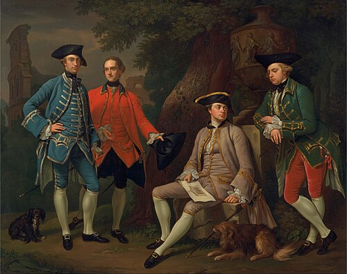

A c. 1760 painting of James Grant, John Mytton, Thomas Robinson and Thomas Wynne on the Grand Tour by Nathaniel Dance-Holland
Tourism in Italy is one of the largest economic sectors of the country. With 60 million tourists per year (2024), Italy is the fifth-most visited country in international tourism arrivals. According to 2018 estimates by the Bank of Italy, the tourism sector directly generates more than five percent of the national GDP (13 per cent when also considering the indirectly generated GDP) and represents over six per cent of the employed.
People have visited Italy for centuries, yet the first to visit the peninsula for tourist reasons were aristocrats during the Grand Tour, beginning in the 17th century, and flourishing in the 18th and 19th centuries. This was a period in which European aristocrats, many of whom were British and French, visited parts of Europe, with Italy as a key destination. For Italy, this was in order to study ancient architecture, local culture and to admire the natural beauties.
From Wikipedia, the free encyclopedia.